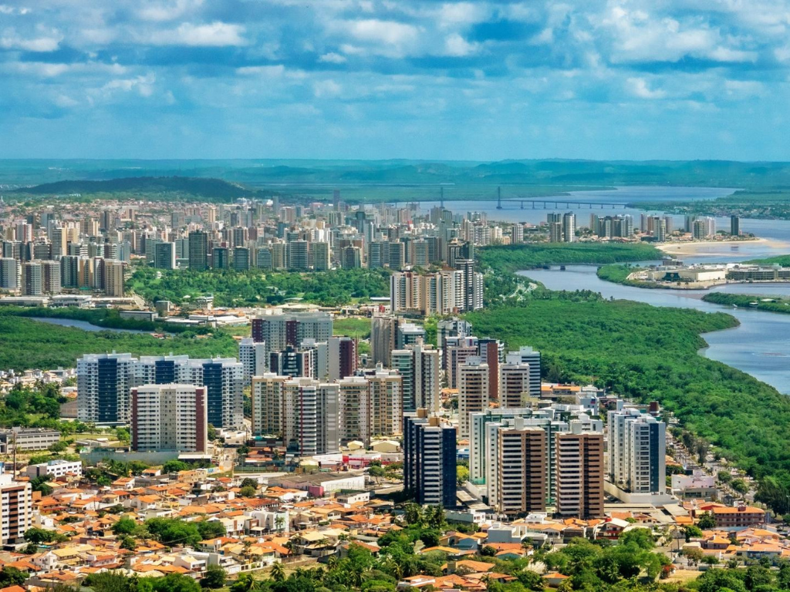

O estado de Sergipe está localizado na região Nordeste do Brasil e é o menor estado brasileiro em extensão territorial. Sua capital é Aracaju, conhecida por suas praias, qualidade de vida e forte atividade turística. Sergipe possui uma rica cultura marcada pelas festas populares, culinária típica e tradições nordestinas. Além das belas praias, o estado também se destaca por atrações naturais como o Cânion do Xingó, um dos principais pontos turísticos da região. A economia sergipana é baseada no turismo, agricultura, pecuária, comércio e exploração de petróleo e gás natural.

Voltar